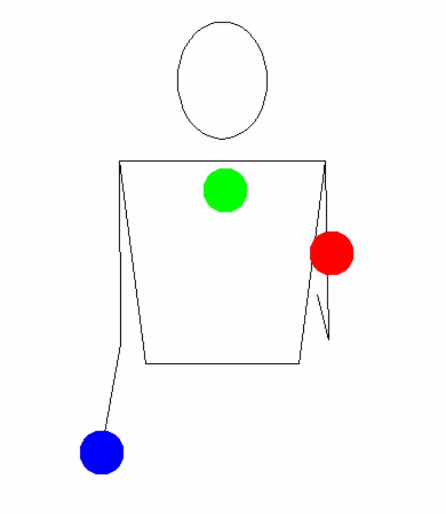

Jonglieren mit Zahlen
Jennifer Matthiesen
Mai 2020
Damit Jongleure sich untereinander verständigen können und Tricks austauschen können, werden sogenannte Siteswaps genutzt. Bei der Siteswap-Notation werden Jonglierticks als eine Sequenz von Nummer dargestellt, wobei jede Nummer das Zeitintervall des jeweiligen Wurfes repräsentiert. Das klingt jetzt erst einmal komplizierter als man denkt. Schauen wir uns das ganze einmal an einem Beispiel an:
Zunächst einmal schauen wir uns die „normale“ Jonglage mit drei Bällen an, die sogenannte Kaskade:
Folgen wir nur dem blauen Ball, sehen wir, dass nachdem dieser geworfen wurde zwei weitere Bälle fliegen, bevor wieder der blaue Ball geworfen wird. Sprich, der blaue Ball wird losgeworfen, auf Takt 1 und 2 fliegen die anderen beiden Bälle, bevor in Takt 3 wieder der blaue Ball geworfen wird.
Wir werfen also: Blau, rot, grün, blau, rot, grün…
| Takte | 0 | 1 | 2 | 3 |
| Ball | 🔵 | 🔴 | 🟢 | 🔵 |
Es vergehen also 3 Takte bis der blaue Ball landet bzw. wieder losgeworfen werden kann. Daher nennen wir diesen Wurf eine 3 (oder im englischen auch 3-throw). Es sehr beliebte Darstellung unter Jongleure ist die Ansicht von Oben auf das Muster. Stellt euch vor, euch würde eine Kamera von der oben filmen, während Ihr beim Jonglieren durch den Raum geht. Die obere Reihe an Punkten stellt dann die Linke und die untere Reihe die rechte Hand dar:
//todo ladder diagrammIn der Kaskade mit drei Bällen werden alle Würfe gleich geworfen. Wir können daher dieses Wurfmuster als 333 repräsentieren. Das alle Zahlen für alle Würfe die Gleiche ist, kann der Siteswap auch als 3 abgekürzt werden. Und da ist auch schon unser erster Siteswap! :) War gar nicht so schwer, oder?
Gleiches gilt natürlich auch für die Jonglage mit 4, 5 oder 6 Bällen. Nur das hier, deutlich mehr Zeit vergeht, bis der Initialball wieder geworden wird. Bei 4 Bällen vergehen hierbei fünf Takte, bei 5 fünf Takte usw.. Sprich die 5-Ball Kaskade würde in der Siteswap-Notation als 5 dargestellt werden. Hierbei fliegen ungerade Würfe immer zur anderen Hand, während gerade Würfe wieder in der gleichen Hand landen. Erstmal recht einleuchtend, oder? Dann kann der richte Spaß ja beginnen!
Verschiedene Würfe lassen sich nämlich kombinieren. So z.B. wie im Siteswap 423. Hier wird der erste Ball, wie in einem 4-Ball Muster geworfen, darauf folgt eine 2 - Moment! Eine 2? Ja genau, eine 2. Eine 2 wir wie eine 4 jongliert, nur niedriger. Da diese so niedrig ist, dass kein anderer Ball aus der Hand in der Zeit dazwischen geworfen werden kann, tricksen die meisten Jongleure hier und werfen den Ball erst gar nicht. Er wird also ganz einfach in der Hand gehalten.
Das Muster würde dann wie folgt aussehen:

Eine weitere Eigenschaft von Siteswaps ist es, dass ihr anhand einer Zahlenreihenfolge sehen könnt, wie viele Bälle benötigt werde. Hierfür addiert ihr alle zahlen der Sequenz und dividiert sie durch die Anzahl den der Stellen (der Durchschnitt). Das Ergebnis ist dann die Anzahl an Bällen, die ihr für das Muster braucht.
$$ 4 + 2 + 3 = 9 $$ $$\frac{9}{3} = 3$$
423 ist also ein 3-Ball Trick. Versucht es einmal, es ist gar nicht so schwer ;)
Klappt? Dann versucht euch doch mal an 531 oder 441!